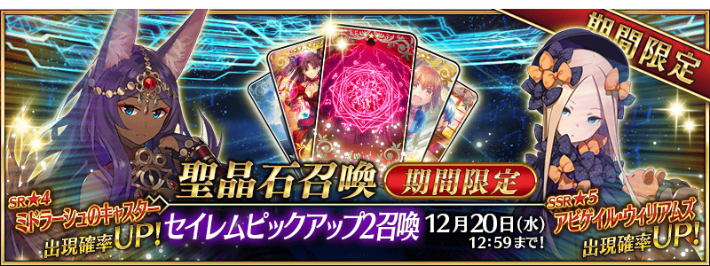
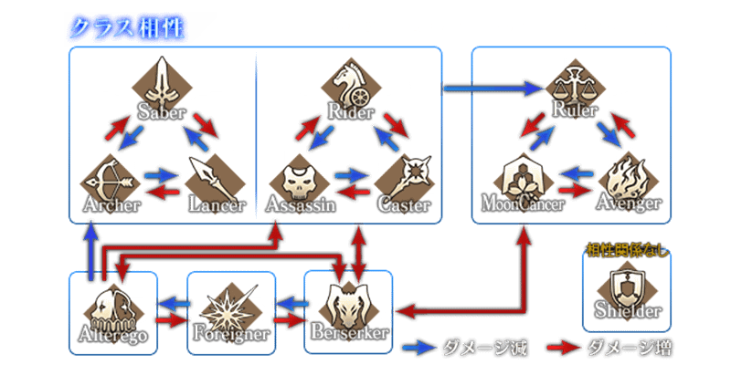
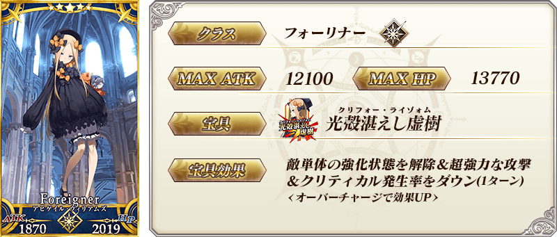
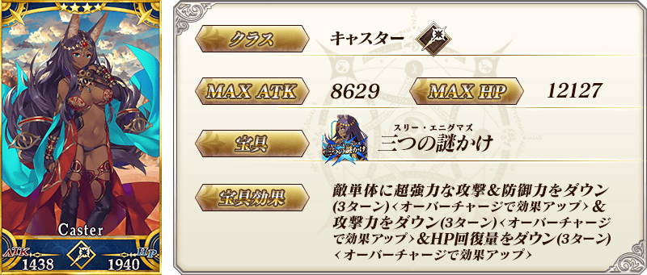
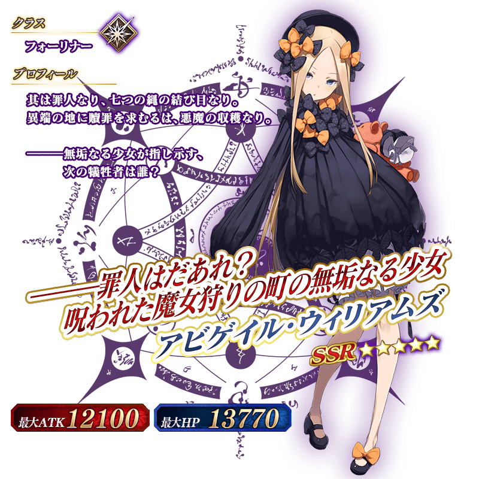
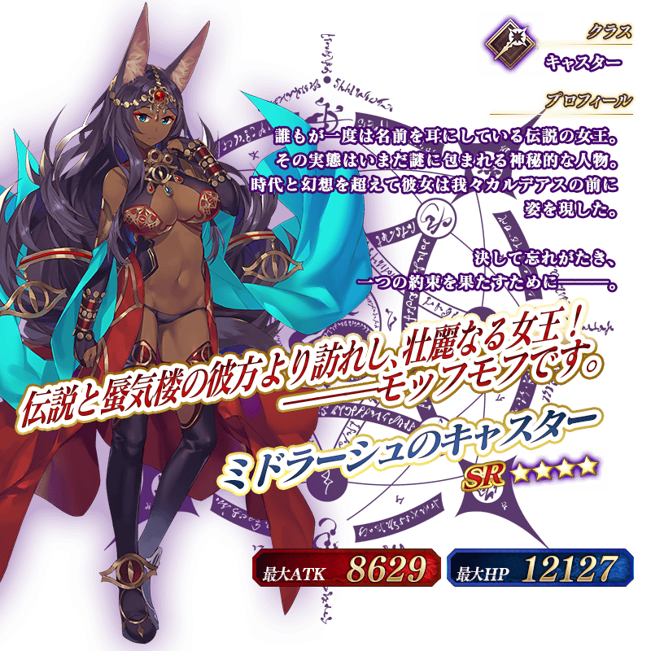

◆「塞勒姆Pick Up2召喚」期間◆
期間:2017年12月6日(三) 17:00～12月20日(三) 11:59
舉辦期間限定「塞勒姆Pick Up2召喚」！
※未到達亞種特異點Ⅳ的狀態也能進行「塞勒姆Pick Up2召喚」。
於「亞種特異點Ⅳ 禁忌降臨庭園 塞勒姆 異端的塞勒姆」登場的Servant「★5(SSR)阿比蓋爾・威廉斯」以期間限定登場！
另外，「★4(SR)米德拉什的Caster」Pick Up！
※阿比蓋爾・威廉斯在Pick Up期間結束後不會追加到故事召喚。
※Pick Up期間中，米德拉什的Caster就算亞種特異點Ⅳ通過前也能入手。
Pick Up期間中，期間限定Servant、Pick Up Servant的出現機率提升！
詳情請在聖晶石召喚畫面左下的召喚詳細確認。
※關於真名尚未判明的Servant，透過主線關卡的進行會讓Servant及一部份寶具的名稱變化。
10次召喚中確定1張★4(SR)以上和確定1位★3(R)以上的Servant！
※確定★4(SR)以上包含Servant和概念禮裝。
※所謂「出現機率提升」意指比同稀有度的Servant及概念禮裝出現機率更高的設定。
於「亞種特異點Ⅳ」初登場職階「Foreigner」的Servant登場。
「Foreigner」是對「Berserker」有利，對「Alterego」不利的職階。
給予「Berserker」的傷害變大，從「Berserker」受到的傷害變小。
給予「Alterego」的傷害變小，從「Alterego」受到的傷害變大。
另外，對「Foreigner」有相互關係，給予「Foreigner」的傷害變大，從「Foreigner」受到的傷害也變大。

介紹阿比蓋爾・威廉斯、米德拉什的Caster的寶具演出！
在Fate/Grand Order官方網站內的公告中，公開了「★5(SSR)阿比蓋爾・威廉斯」「★4(SR)米德拉什的Caster」的寶具演出。敬請確認。
※阿比蓋爾・威廉斯的寶具根據再臨階段，演出會有所變化。



